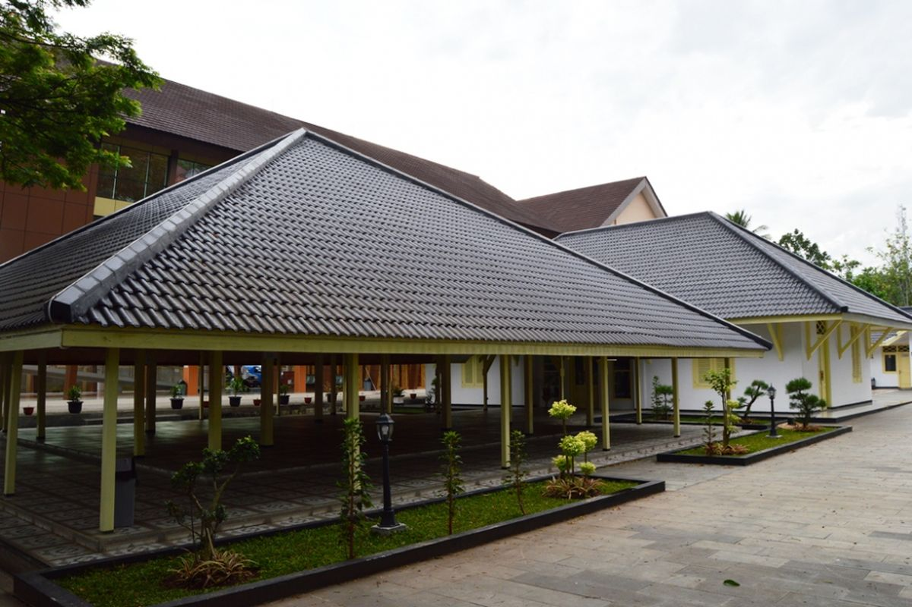
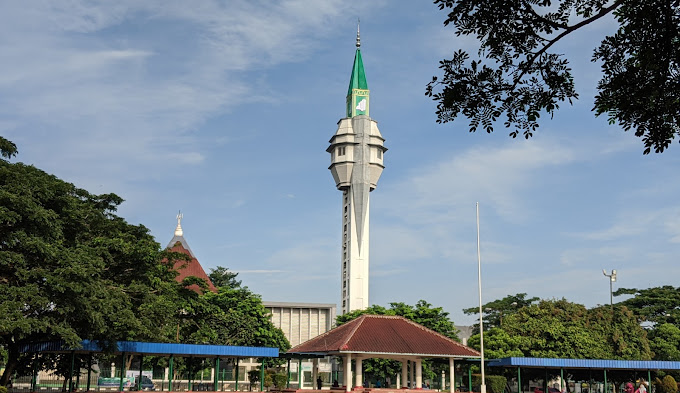
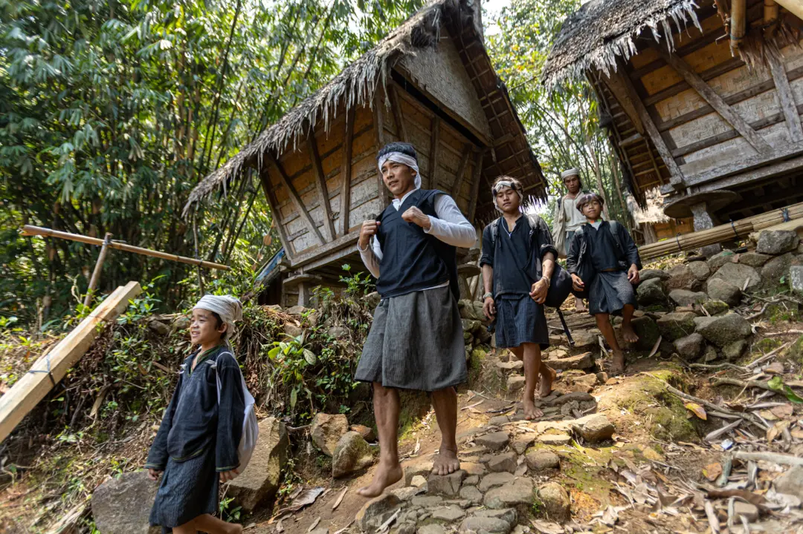
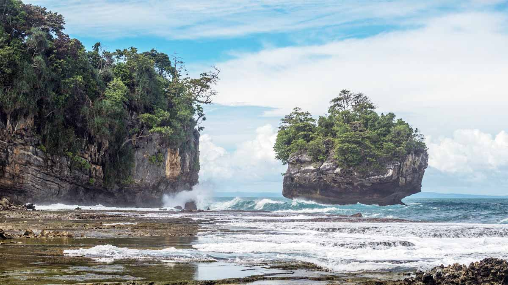
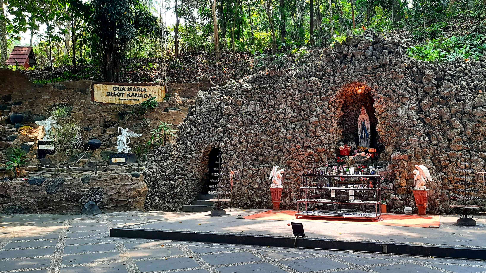
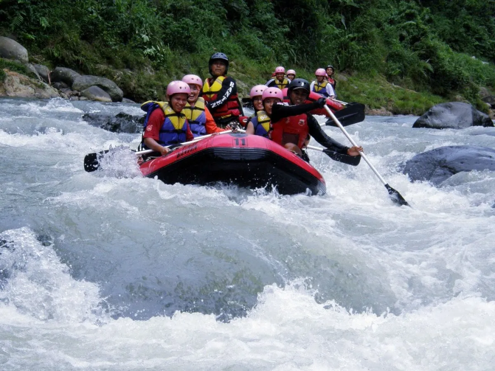
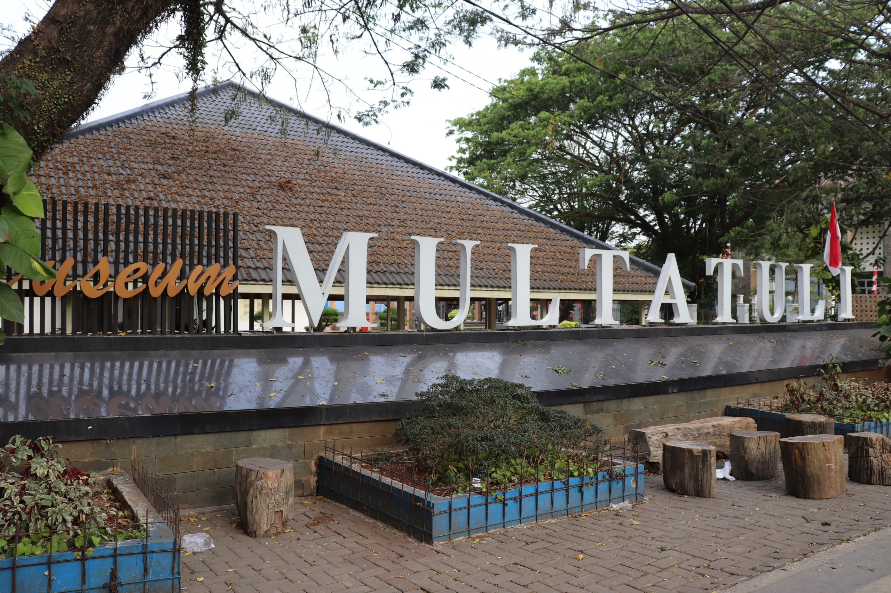

Sejarah

Lebak menjadi bagian dari wilayah Kesultanan Banten dan masyarakatnya
menganut ajaran agama Islam. Pada abad ke-19 terjadilah perubahan politik di daerah
tersebut. Perubahan itu seiring dengan semakin meluasnya kekuasaan Belanda di wilayah
Banten yang ditandai oleh penghapusan Banten tahun 1808 oleh Daendels.
Perkembangan selanjutnya pada masa pemerintahan Letnan Gubernur Jenderal Thomas Stamford Raffles (1811-1816),
Banten dibagi menjadi empat daerah setingkat kabupaten, yaitu: Kabupaten
Banten Lor, Banten Kulon, Banten Tengah, dan Banten Kidul.
Setelah kekuasaan dipegang kembali oleh Belanda, maka wilayah Banten dibagi menjadi 3 kabupaten yaitu:
Kabupaten Serang, Caringin, dan Lebak. Perubahan berikutnya terjadi pada tanggal 14 Agustus 1925,
Lebak menjadi sebuah kabupaten otonom. Kemudian, pada tahun 1950 mengenai pembentukan daerah-daerah dalam lingkungan Provinsi Jawa Barat,
Kabupaten Lebak dimasukkan ke dalam 25 Daerah Tingkat II di provinsi tersebut.
Pada tahun 2003, Kabupaten Lebak menjadi bagian dari Provinsi Banten.
Penduduk Kabupaten Lebak dari tahun ke tahun mengalami perkembangan yang signifikan,
begitu pula di bidang sosial budaya dan pendidikan berkembang cukup dinamis.
Geografis

Kabupaten Lebak secara geografis terletak pada titik koordinat 105°25'–106°30' Bujur Timur dan 6°18'–7°00' Lintang Selatan.
Kabupaten Lebak memiliki luas wilayah sekitar 304.472 ha (3.044,72 km²),
dengan batas wilayah administratif sebagai berikut: sebelah utara Kabupaten Serang dan Tangerang,
sebelah selatan Samudera Indonesia, sebelah barat Kabupaten Pandeglang,
dan sebelah timur Kabupaten Bogor dan Kabupaten Sukabumi.
Iklim di Kabupaten Lebak dipengaruhi oleh angin Muson dan La Nina.
Cuaca didominasi oleh angin baratan dari Samudera Hindia dan benua Asia pada musim hujan
dan angin timuran pada musim kemarau. Curah hujan rata-rata per tahun mencapai 2.000–4.000 mm dengan suhu udara antara 20°–32°C.
Pariwisata
Terdapat beragam destinasi wisata budaya dan wisata alam
yang dimiliki Kabupaten Lebak, di antaranya sebagai berikut:
Wisata Kampung Baduy

Wisata Kampung Baduy di Leuwidamar Lebak Banten
merupakan wisata alam sekaligus wisata budaya.
Suku Baduy merupakan suku yang hidup secara terisolir dari dunia luar.
Mereka hidup secara sederhana dan menyatu dengan alam.
Alam yang masih alami dan budaya yang ditawarkan oleh
kampung suku Baduy menjadi daya tarik wisata tersendiri bagi daerah ini.
Geopark Bayah Dome

Geopark Bayah Dome merupakan Prioritas Pariwisata Kabupaten Lebak.
Geopark Bayah Dome meliputi geosite Bayah, Cilograng, Cibeber, Panggarangan, Cigemblong, Cihara, Sajira dan Curugbitung.
Kementerian Energi dan Sumber Daya Mineral (ESDM) juga telah menetapkan
Kawasan Bayah Dome atau Kubah Bayah di Kabupaten Lebak sebagai Geopark yang memiliki warisan Geologi
atau Geoheritage melalui Keputusan Menteri ESDM Nomor 164 Tahun 2022 tentang Penetapan Warisan Geoheritage
kawasan Bayah Dome atau Kubah Bayah tersebut. Geopark Bayah Dome bertujuan untuk menjaga konservasi alam,
melestarikan budaya, serta menjadi sumber pendapatan berbasis wisata edukasi.
Wisata Gua Maria Bukit Kanada

Wisata Gua Maria Bukit Kanada di Rangkasbitung Lebak Banten ini dikembangkan oleh umat Paroki Rangkasbitung di
era 1988 dengan dukungan dari impinan Kongregasi Suster-suster Fransiscan Sukabumi di Rangkasbitung.
Berawal dari tanah dilingkungan SPK Misi Lebak Rangkasbitung yang dianggap memenuhi syarat sebagai Gua Maria.
Pada tanggal 1 Mei 1988 Pastor Paroki meletakan batu pertama sebagai langkah awal pembangunan Gua Maria.
Pembangunan Gua Maria itu selesai tepat pada tanggal 15 Agustus 1988, yaitu
Hari Raya Maria diangkat ke Surga, bertepatan dengan penutupan Tahun Maria.
Gua Maria ini lalu diberkati oleh Mgr. Ign. Harsono, Pr. Gua ini merupakan tempat ziarah pertama di tanah Banten.
Wisata Arung Jeram Sungai Ciberang

Sungai yang terletak di kampung Muhara ini biasa disebut dengan nama sungai Ciberang.
Sungai Ciberang ini menyediakan beberapa jalur pengarungan baik untuk pemula yang hanya sepanjang 700 m.
Sementara untuk yang ingin memacu adrenalin maksimal disediakan jalur sepanjang 25 km
yang dapat ditempuh dalam waktu sekitar 5 jam.
Selama menyusuri sungai Ciberang wisatawan akan dimanjakan pemandangan hijaunya pepohonan
Taman Nasional Gunung Halimun yang masih asri dan alami.
Museum Multatuli

Museum Multatuli adalah museum umum yang menempati bekas Wedana Rangkasbitung
yang telah digunakan sejak tahun 1923. Museum Multatuli berisikan tentang sejarah kolonial Belanda
serta Mulatuli dalam perjuangan kemerdekaan Indonesia.
Novel karya Multatuli yang mulai terbit pada 1860, merupakan karya
yang banyak mengisahkan potret kondisi masyarakat Lebak pada masa kolonial Belanda.